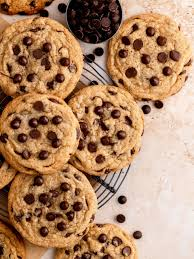
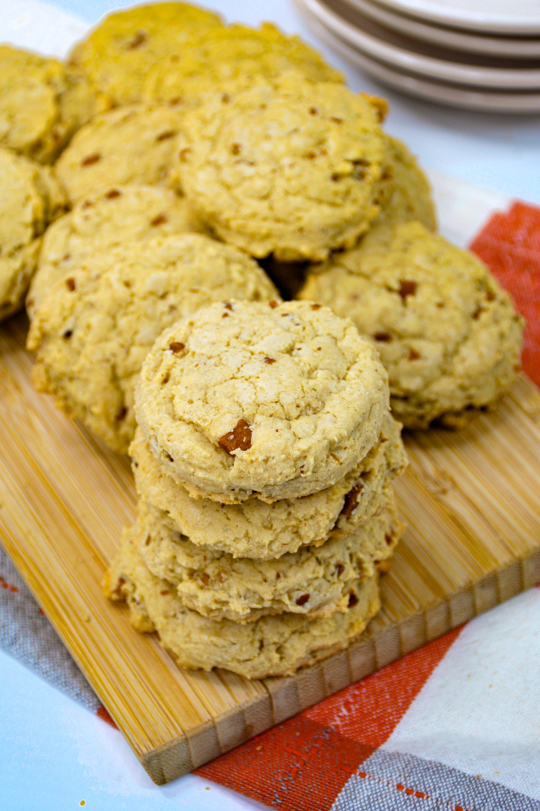
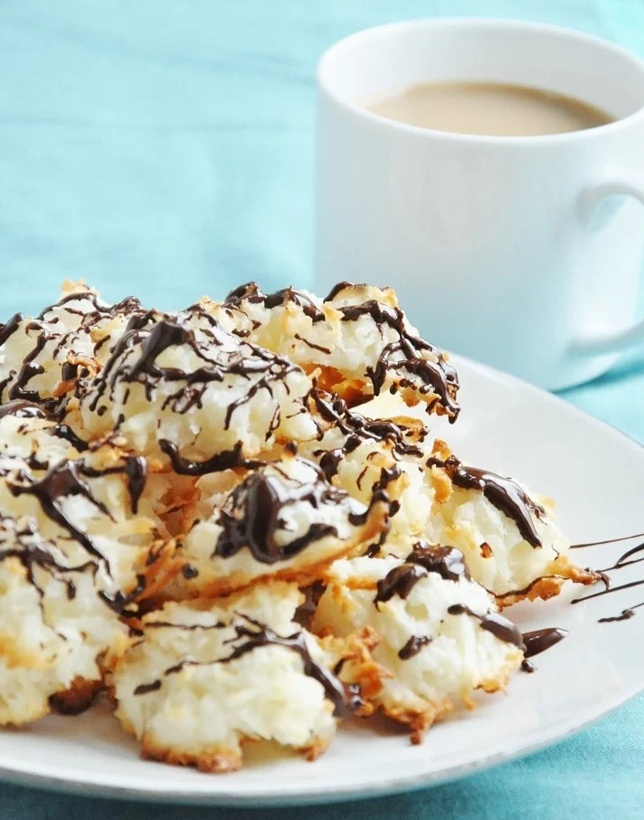
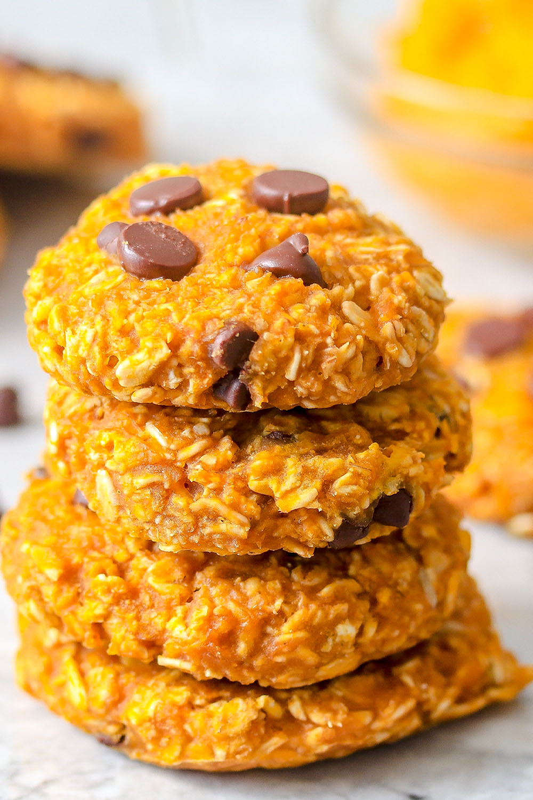

Easy Chocolate Chip Cookies

Prep: 15 minutes Bake: 15 minutes Oven: 350 Makes: 20 cookies
One cookie equals:
71 calories, 5g fat, 21mg sodium, 5g carbohydrate, 1g fiber, and 2g protein.
INGREDIENTS
- 2 cups blanched almond flour
- 3 Tablespoons coconut flour
- 1 Tablespoon arrowroot starch
- ½ teaspoon baking soda
- 1/8 teaspoon sea salt
- ½ teaspoon vanilla extract
- 1 egg
- ¼ cup pure maple syrup
- 2 Tablespoons coconut oil
- 1/2 cup mini, dairy and soy free chocolate chips (Enjoy Life brand)
METHOD:
- Preheat oven to 350 degrees F. Lightly grease a baking sheet with coconut oil.
- In a medium bowl combine the almond flour, coconut flour, almond flour, arrowroot starch, baking soda and salt.
- In another medium bowl combine the egg, vanilla, syrup and (cooled) oil. Add the wet ingredients to the dry ones and mix until fully combined. Stir in the mini chocolate chips.
- Shape the dough into 20 cookies, flattening them slightly onto the greased pan. Bake for 12-15 minutes, or until golden.
- Allow to cool on the pan for 5 minutes, then transfer to a wire cooling rack. Store in an airtight container in the fridge.
Buttery Pecan Caveman Cookies
Prep: 15 minutes Bake: 15 minutes Oven: 350 Makes: 20 cookies
One cookie equals:
154 calories, 11g fat, 32mg sodium, 12g carbohydrate, 2g fiber, and 2.5g protein
INGREDIENTS
- 1 1/2 cup raw pecans
- 3 Tablespoons coconut flour
- 1/2 cup almond flour
- 2 Tablespoons arrowroot starch
- 1/2 teaspoon baking soda
- 1/8 teaspoon salt
- 1 omega-3 egg
- 1/2 teaspoon vanilla extract
- 1/4 cup pure maple syrup, grade b
- 2 Tablespoons coconut oil, melted
- 1/2 cup mini, dairy and soy free chocolate chips (Enjoy Life brand)
METHOD:
- Preheat oven to 350 degrees F. Lightly grease a baking sheet with coconut oil.
- Place the raw pecans in a food processor and pulse until coarsely ground.
- In a medium bowl combine the ground pecans, coconut flour, almond flour, arrowroot starch, baking soda and salt.
- In another medium bowl combine the egg, vanilla, syrup and (cooled) oil. Add the wet ingredients to the dry ones and mix until fully combined. Stir in the mini chocolate chips.
- Shape the dough into 20 cookies, flattening them slightly onto the greased pan. Bake for 12-15 minutes, or until golden.
- Allow to cool on the pan for 5 minutes, then transfer to a wire cooling rack. Store in an airtight container in the fridge.
Guilt-Free Macaroons
Prep: 15 minutes Bake: 15 minutes Oven: 350 Makes: 15 cookies
One cookie equals:
115 calories, 10g fat, 15mg sodium, 2g carbohydrate, 0g fiber, and 3g protein
INGREDIENTS
- 3 egg whites
- 1/4 teaspoon cream of tartar
- 4 Tablespoons coconut oil, melted and cooled
- 2 Tablespoons water
- 1/2 teaspoon vanilla extract
- 1/4 teaspoon almond extract
- 2 Tablespoons Stevia in the Raw
- 2 cups unsweetened coconut flakes
- 1/4 cup dark chocolate chips
METHOD:
- Preheat the oven to 350 degrees F. Generously grease a baking sheet with coconut oil.
- Beat the egg whites with an electric mixer with the whisk attachment until peaks begin to form.
- Add the cream of tartar, coconut oil, water, vanilla and almond extracts.
- Fold in the coconut flakes.
- Place 1/4 cup mounds of batter on the prepared baking sheet.
- Bake for 15 minutes, or until golden. Sprinkle the chocolate chips on top of the warm cookies, then spread with a fork once melted.
Pumpkin Quinoa Cookies

Prep: 15 minutes Bake: 20 minutes Oven: 350 Makes: 30 cookies
One cookie equals:
96 calories, 6g fat, 20mg sodium, 8g carbohydrate, 1g fiber, and 4g protein
INGREDIENTS
- 2 cups cooked quinoa 2 cups almond meal
- 1/4 teaspoon salt
- 2 teaspoons pumpkin pie spice
- 1/2 cup canned pumpkin
- 1/3 cup coconut crystals
- 1 teaspoon vanilla extract
- 2 organic, omega 3 eggs
- 2 Tablespoons coconut oil
- 1 cup mini dark chocolate chips, divided
METHOD:
- Preheat oven to 350 degrees F. Grease two cookie sheets with coconut oil. Set aside.
- In a medium bowl, combine the cooked quinoa, almond meal, salt and pumpkin pie spice. Mix well.
- In another medium bowl, combine the canned pumpkin, coconut crystals, vanilla extract, eggs and coconut oil. Mix well.
- Combine the dry ingredients with the wet ones and then fold in 1/2 cup of the dark chocolate chips. Place by flattened Tablespoon on the prepared cookie sheets. Bake for 20 minutes, or until golden. Allow to cool for 15 minutes on the sheet before transferring to a cooling rack.
- In a double boiler, or simply by placing a small saucepan in a skillet of water, over medium-low heat, melt the remaining 1/2 cup of dark chocolate chips. Drizzle over the cookies. Transfer the cookies to the refrigerator for 20 minutes or until the chocolate has hardened.